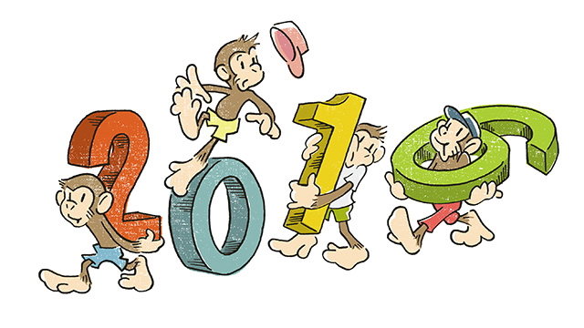
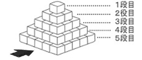
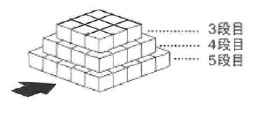
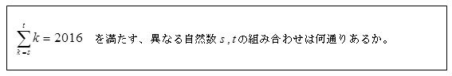

「西暦の数字を使って整数問題を作ろうとするのは、職業病以外のナニモノでもない」──お決まりのツイートが新年のあいさつがわりになりつつある池村氏。昨年は全くかすりもしなかった整数問題について、懲りずに言及します。
‘2016’は、数十年ぶりのレア年
新年、明けましておめでとうございます！
と言っても、年が明けてから２週間近くが経っていますが。
新年一発目の池村ブログでは、受験生のための予想問題を贈りたいと思います。
今回は、本質的には全く同じである問いを「中学受験」「高校受験」「大学受験（センターレベル）」に合わせた形で載せてみます。
目にした受験生はぜひチャレンジみて下さい。
※ちなみに、一年前も西暦関連の話を載せていますので、あわせてどうぞ（2015年1月7日／my法則シリーズ～2015はそこそこﾌﾟﾚﾐｱﾑな数～）
）。
小学生の皆さんへの問題

一辺が1cmの立方体を図のような規則で床の上に積み、ピラミッドを作ります。このとき、次の会話文を読んで空欄に当てはまる数値や言葉、または文章を書きなさい。池村：このピラミッドの「外側から見ることのできる部分の総面積（これを①とする）」を考えてみようと思うんだけど、何かよい案はあるかな？
庄本：そうですね…、まずは「矢印の方向から水平にこの立体を見たときに見えている部分の面積（これを②とする）」を考えるのがよいと思います。
池村：よい案だね。例えば1段目から20段目まで積み上げたピラミッドの場合、②はいくつになるかな？
庄本：この場合の②は（ ア ）cm²になります。
池村：そうだね。この答えを利用して、このピラミッドの①について計算したらどうなる？
庄本：同じく水平方向から見た残りの面積と、真上から見たときの面積をあわせればよいから…（ イ ）cm²になりますね。
池村：庄本君！ なかなか冴えているじゃないか。じゃあこういうのはどうかな。実は1段目からある段目まで積んだときの②が2016cm²になる場合があるんだ。2016年になったことだし、その場合を考えてみたい。
庄本：たまたま2016cm²になるときがあるというわけですね。う～ん、面積から段数を考えるのは難しいですね。何かヒントが欲しいです。
池村：では、いくつか方法がある中の一つについてヒントをあげよう。下の図を見てごらん。
庄本：なんでしょう、これは？
池村：図Aは、仮に4段目まで積んだピラミッドを階段のような並び方にずらして、矢印の向きから水平に見たものだよ。もちろん面積が変わっていないのはわかるね？
庄本：わかります。あ、もしかして図Bはそれを2つ用意して、互い違いにくっつけようとしているのですか？
池村：庄本君！ 察しが良いね。まさにその通りだ。そこで考えてほしい。図Bの向きで2つの階段をくっつけたときにできる長方形の「縦と横の長さの関係」はどうなるか。
庄本：4段のときに限らず、何段のときでも縦の長さは（ ウ ）なりますね。
池村：いいぞ、いいぞ庄本君！ ところで、このようにして作った長方形は段数が多ければ多いほど、限りなく「ある形」に近づいていく。それは何だ？
庄本：（ エ ）です。
池村：その通りだ。ということは、今回はこの長方形の面積が（ オ ）cm²で、さらに縦の長さと横の長さが（ カ ）ような組み合わせを考えればよいわけだ。
庄本：それは適当に割り算をして見つけるんですか？
池村：それで運よくすぐに答えが見つかる場合もあるだろう。しかしここは（ キ ）を利用してみるのがオススメだ。
庄本：あ、整数をできるだけ細かくかけ算の形で表す方法ですね。
池村：そう。さっそく（ オ ）を（ キ ）してみてくれ。
庄本：え～と…、できました。（ ク ）になりました。
池村：よし。そこから縦と横の長さを決定してみよう。
庄本：いくつか試してみた結果、縦が（ ケ ）cm、横が（ コ ）cmになりました。
池村：ということは、②が2016cm²になるときに積んだピラミッドは…
庄本：1段目から（ サ ）段目まで、になります。さらに、このときの①を計算してみたところ、（ シ ）cm²になりました。
池村：すごいぞ庄本君。今回は②が2016cm²になる場合の問題だったが、例えば来年の2017年にはこの問題は成り立たない。この積み方で②が2017cm²になることはないからね。
庄本：そうですよね。今回はたまたまです。
池村：では、来年以降でその年の西暦の数字が②の値になる５回目の年は、西暦何年だ？
庄本：西暦（ ス ）年です。ハッキリ言って、余裕でわかりますよ。
池村：オーイェス！ 私は感激で涙が出そうだよ。

池村：さて、ここから別の視点で考えてみるぞ。積み上げたピラミッドの1段目から数段分を取り除いた「台形ピラミッド」を作る。例えば、右図はこのような作り方で上から3～5段目までを積んだ台形ピラミッドだ。このときに「外側から見ることのできる部分の総面積（これを③とする）」と、「矢印の方向から水平にこの立体を見たときに見えている部分の面積（これを④とする）」を考えてみよう。庄本：なるほど。この場合は積まれている段数そのものは3段分ということですね。
池村：そうだ。では、「積まれている段数が7段で、④が2016cm²」のとき、この台形ピラミッドは何段目から何段目までを積んで作られたものだろうか。
庄本：これはかなり面倒ですね…。
池村：いや、そうでもないぞ。段数が7段しかないからむしろ簡単かもしれないぞ。
庄本：あ、連続した7つ整数の和が2016になるように考えればいいのか。そうなると、7段分の台形ピラミッドの④が2016cm²になるのは、（ セ ）段目からの下方向に（ ソ ）段目までを積んだときになりますね。
池村：その通り！ それでは最終問題だ。必ず上から1段以上は取り除いて台形ピラミッドを作るとすると、「④が2016cm²で、最も積まれている段数が多い場合の③」を求めてほしい。ただし、「積まれている段数が奇数のときにしか、④が2016cm²になることがない」ということは私が確かめておいた。
庄本：なかなかハイレベルですね…でもできました。（ タ ）cm²です。
池村：庄本君、君は素晴らしい！
中学生の皆さんへの問題
(1) x=9のとき、連続した自然数の中で最小のものを求めなさい。
(2)連続した自然数の大きさの平均をaとして以下の問いに答えなさい。
①aとxの関係を式で表しなさい。
②次の空欄に当てはまる言葉や数値を答えなさい。
aとxの関係式から、その組み合わせは何通りか考えられる。ただし、連続した自然数の個数xが多すぎると、それらの平均であるaの値が（ ア ）くなり、最小の数が負の値となり自然数ではなくなってしまう。そうならないようにするには、xの値がaの（ イ ）倍を超えないような組み合わせを考えればよい。
このように考えた組み合わせの中で、連続した自然数の個数 が最も少ないときには、（ ウ ）から（ エ ）までの自然数の和となり、xが最も多いときには、（ オ ）から（ カ ）までの自然数の和となる。
（※問題の冒頭に「連続した‘複数の’自然数の和」と記載しているので、x=1のときは除く）
高校生の皆さんへの問題

ということで、見事このような問題が入試で出題されたら感謝して下さい（笑）。
解答
＜小学生の皆さんへの問題＞
ア 210
イ 1240
ウ 横の長さより1cm短く
エ 正方形
オ 4032
カ ほぼ等しくなる
キ 素因数分解
ク 2×2×2×2×2×2×3×3×7
ケ 63
コ 64
サ 63
シ 12033
ス 2346
セ 285
ソ 291
タ 19300
＜中学生の皆さんへの問題＞
(1)220
(2)①ax=2016
②ア：小さ イ：2 ウ：671 エ：673 オ：1 カ：63
＜高校生の皆さんへの問題＞
5通り